Telegram Bots
some subtitle here, idk
Tech Retro - Jun 1, 2016@raphaeltanyw


 https://core.telegram.org/bots/api
https://core.telegram.org/bots/api
Ruby: telegram-bot-ruby
Scala: telegrambot4s
Python: python-telegram-bot
...and many others, just google it.require 'telegram/bot'
token = 'YOUR_TELEGRAM_BOT_API_TOKEN'
Telegram::Bot::Client.run(token) do |bot|
bot.listen do |message|
case message.text
when '/start'
bot.api.send_message(
chat_id: message.chat.id,
text: "Hello, #{message.from.first_name}"
)
when '/stop'
bot.api.send_message(
chat_id: message.chat.id,
text: "Bye, #{message.from.first_name}"
)
end
end
end
Bots in GDS and ACE (BGP)
BGP Helper
Non-interactive bot (@BGP_Helper)Github Page
Problem:
- Devs focus on tasks
- Rarely look at the build status
- Devs want to know if:
- Build is passing before merging
- Their code breaks the build
- Telegram to communicate with PPO/UX/QA/other devs
Alerts when the RoR CI build:
- First fails
- Passes again
Easier to troubleshoot if detected ASAP

GeeksDontSlack
Interactive bot (@GDS_Bot)Github Page
“Pull request is like playing chess, it does not guarantee a happy ending the more you check, but it does make you feel better”-- Yew Lee
Random quotes
Light humour(Hope it doesn't offend anyone)
- /qotd: Dev-related quotes 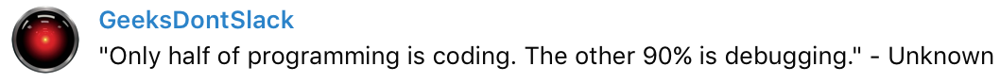
- /qotd_gds: Quotes from GDS members 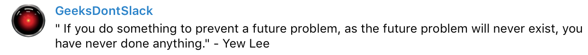
- /50_nerds: Tweets from @50NerdsofGrey 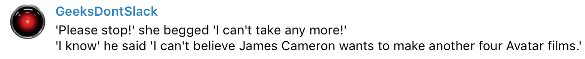
Hashtag Count
Counts the number of people who respond with a hashtag 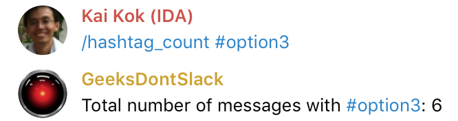Chapter list
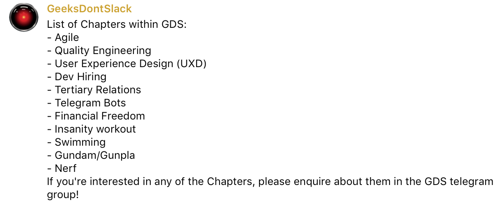Other bots in GDS
BGP Attendance Bot
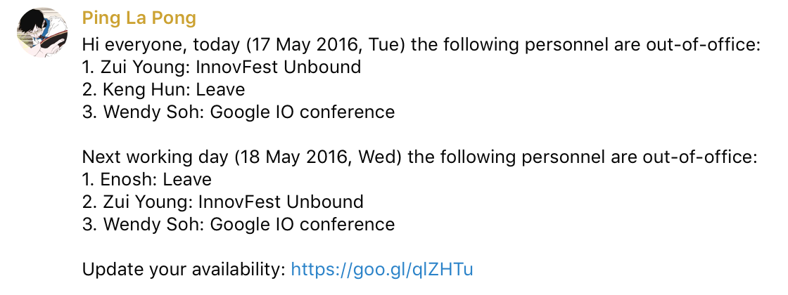 by Kah Kong (Github Page)Ari-chan
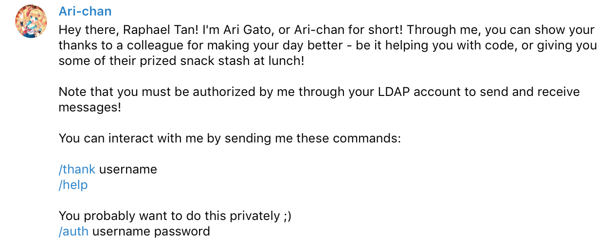 by RogerThe Ugly
Lack of standardization
- E.g. /start command is rarely implemented
Privacy modes
- Enabled:
- Commands
- Replies
- Service messages
- Disabled:
- ALL messages
Privacy modes
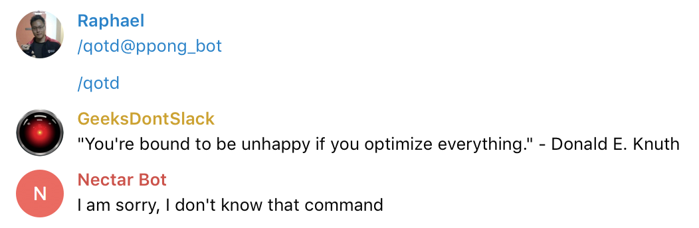 Multiple bots = MessyPrivacy modes
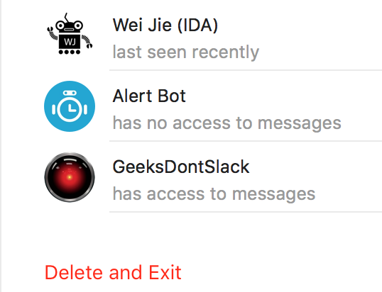Beware when inviting third party bots
Random errors
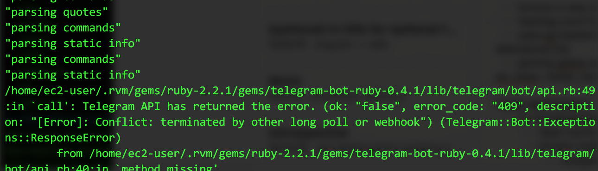 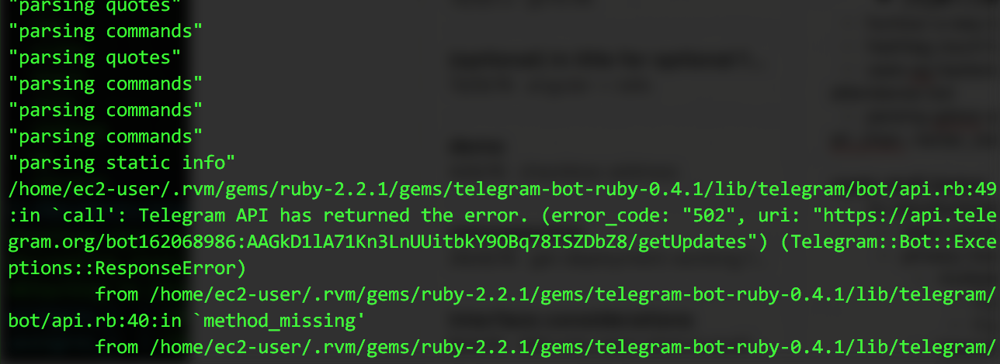Conclusion
(IMHO) Good for
- Simple input, quick feedback
- Short, periodic notifications
- May have some exceptions...
Can someone create a bot that does this one thing?
NO
Well, maybe...
Think about:
- Usability/Interaction (Mostly text-based)
- Too complex?
- Coherence (Does another bot do a similar thing?)
- More bots = More noise
So, can someone add this feature to this bot?
Submit a pull request!
It's not hard, really.